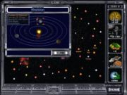
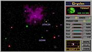
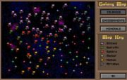
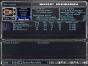
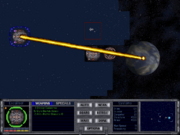
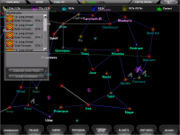
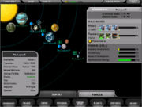
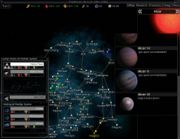
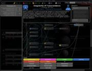

Master of Orion

Тёплый, ламповый MoO2
Master of Orion — культовая вневременная игра в жанре пошагового завоевания космоса.
Ценность

Первая часть. Играли, и добавки просили.

А генерал, зажавши ластик, склонился над военной картой…
Всего было выпущено три части игры:
- Master of Orion (1993) — этой и именно этой частью вдохновлялся Пейсатель при написании трилогии про Кея Дача и сопутствующих рассказов. С точки зрения боллитры у него получился масштабный фанфик. Любителям фантастики эта оценка, естественно, очень близка.
- Master of Orion 2: Battle at Antares (1996) — если говорят «MOO», то с 90%-ой вероятностью вспомнят именно про эту часть. Добавлен конструктор рас. Технологии разрабатываются методом тематических брейнштурмов, а не одновременно разных направлений, как в первой. Но и приятная музыка, и отлично прорисованная карта неба MoO2 для многих символизируют прекрасно просранные часы, дни и даже недели.
- Master of Orion 3 (2003) — игру делали совершенно левые разработчики. Получился настолько же сильный фейл, насколько сильным вином была вторая часть. Серьёзно. Главной проблемой оказалось то, что темп игры стал очень медленным. Одновременно, было усложнено то, что усложнять не следовало (довольно дотошно прописали «галактическую экономику») и упрощено всё ровно наоборот. Последний гвоздь в крышку гроба забила графика. Будь она на уровне 1996 года, разрабам бы попеняли, но простили. Но она оказалась хуже! Трудно найти фаната серии, который поставил бы третьей части больше тройки.
Из-за масштабного фэйла третьей части новых официальных игр серии, скорее всего, не будет. Однако красноглазики, вдохновляясь в основном MoO2 (а чем ещё-то?), делают FreeOrion.
Меметичность

MoO2. Конструктор кораблей.

Stellar Converter. Почувствуй себя Дартом Вейдером.
Игровой процесс (мы говорим и будем говорить про первые две части) охуевающе аддиктивен. Неосторожно сев перед сном на пару ходов, можно очнуться от игры лишь от стука утренних трамваев.
Вкратце — можно расселяться, воевать, развивать науку. Культовость MoO в простоте управления и, одновременно, непримитивности выбора. Нет, понятно, что игра за расу с удвоенным воспроизводством населения (Саккра) должна отличаться от управления видом с похуизмом к условиям окружающей среды (Силикоиды) и от интеллектуальных, но крайне медленно размножающихся псилонцев. К примеру, научное развитие происходит так:
- Творческая раса (свойство Creative) при изучении научного направления за каждый шаг будет получать все доступные технологии.
- Ни то ни сё раса (без свойства Creative) — из технологий придётся выбирать одну. Что лучше, +2 к пище или +2 к населению? Улучшенная планировка городов (+ к максимальному количеству населения) или сверхмощные звёздные базы? Двигатели или лазеры?
- Раса с квадратно-гнездовым мышлением (свойство Uncreative) — технология выбирается совершенно случайно.
- Опять же можно воровать или выменивать технологии у других рас.
- В MoO2 можно самостоятельно сконструировать расу, если играть стало слишком легко — набираем расовых штрафов, чтобы получилось двадцать свободных единиц (тратить, разумеется, их уже не надо), и пытаемся привести к власти над галактикой косых, хромых и тупых неудачников-унтерменшей. Если же издевательства над теорией о расовом превосходстве не интересуют, можно просто подогнать расу под себя.
Да, так как победить в игре?
- Можно выпилить всех противников — хорошему игроку даже максимальная сложность нипочём, к сожалению.
- Можно заручиться поддержкой большинства рас — так, чтобы на регулярных выборах президента галактики главной выбрали твою расу.
- Если же расу выбрали, и не твою, и ты согласился с решением Галактического Совета, то игра заканчивается.
- Если же не согласился — придётся воевать против объединённой галактики. Более того, даже если выбрали твою расу, а ты не согласился — результат тот же — война, лол.
Но так как нужно большинство в две трети голосов, чаще всего никого не выбирают.
- В MoO2 можно выпилить антаранцев — злых плохишей из параллельного измерения и тем самым победить. (Причем можно одновременно с выпиливанием всех противников. Очки засчитают, но ролик с падением Антареса нам не покажут).
- В MoO3 можно ещё что-то сделать для победы, но всем похуй.

MoO3. Добавлен для энциклопедичности.
Основная проблема третьей части была изложена выше. На первую и вторую тоже есть нарекания, главное из которых — небольшой размер карты. Даже на максимальном размере галактики все очень быстро вцепляются друг другу в глотку, и всякие дипломатические лулзы и прочая политика быстро становятся недоступными за неимением адресатов. То, что дипломатия в MoO2 сделана хорошо и при большом желании с её помощью можно без войн командовать всей галактикой, лишь добавляет разочарования. В третьей части да, сделали огромные карты, но просрали весь геймплан.

MOO3. Интерфейс
Для интереса, можно захватить тот самый Орион, оставленный зелёными человечками, которые создали все расы и наблюдали за ними с облачков, и найти там годные артефакты.
Можно строить корабли. Не так задротски, как в Space Empires, но всё же. Хорошо продуманная конструкция может позволить произвести массу тактических изысков. Жаль, компьютеру похуй, он тупой. Экстерминатус кораблями проводить тоже можно. Причем есть два варианта: зачистка поверхности планеты от говна, обитающего на ней или разнос самой планеты на мелкие астероиды. Которые потом можно собрать снова в планету. В принципе, захват планет — это и есть массированная бомбардировка, затем высадка частей и всё такое, затем концла строения для ускорения ассимиляции, затем восстановление оборонной инфраструктуры, ну и т. п. Раса телепатов, впрочем, может овладеть планету безо всяких потерь и простоев силами единственного крупного корабля.
Упоминая за пределами интернетика
У Пейсателя цикл романов «Линия грёз», «Императоры иллюзий» и «Тени снов» опирается на вселенную MoO2, и автор не скрывает этого. Невозбранно позаимствованы расы и их характеристики, а также все крутится вокруг идеи виртуальности этого не очень уютного мирка.
Star Lords
Star Lords — не пошедшая в печать (фактически — играбельная альфа MoO 1 с топорным интерфейсом), доставляющая тем что псилоны там называются эльфами, дарлоки — назгули, бурлати — просто медведи и соответсвенно мршанцы — кошки, а алкари — птицы. Бесплатно скачать можно здесь.
FreeOrion

Почти как MoO3
В текущей версии игры заложены некоторые ограничения:
- AI совсем пассивен и почти ничего не делает.
- Не проработан игровой баланс. Например, все технологии стоят ровно 1 (прописью: одну) единицу научных ресурсов.
- Нет тактического боя — результат столкновения флотов рассчитывается автоматически. А обещались сделать, как в Homeworld!

Почти как GalCiv
Сама игрушка — как смесь MoO3 по интерфейсу и вселенной (те же типы галактик, те же туннели а-ля Ascendancy) и Galactic Civilizations по дереву технологий. Впрочем, некоторые технологии доставляют.
Пока что (конец мая 2009) играть можно, но с трудом. Вырвиглазный дизайн и красноглазый интерфейс добавляют удовольствия.
Линупсовая версия работает хорошо, собрана статиком и работает даже на Slackware Бубунту.
Исходный код проекта чуть более, чем наполовину состоит из Буста, в результате чего его компиляция занимает более 9000 часов.
Алсо
- В 1997 году была выпущен MoO как реалтайм стратегия: Pax Imperia: Eminent Domain.
- Есть еще аналогичная Ascedancy.